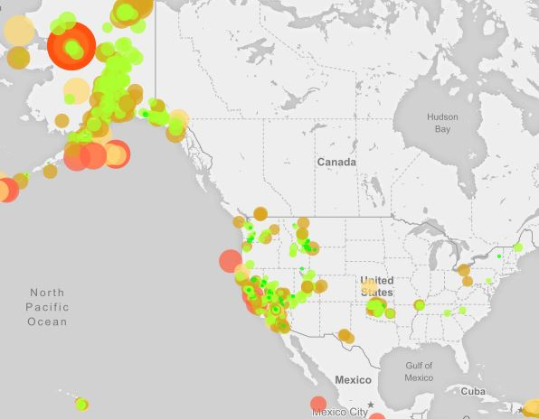
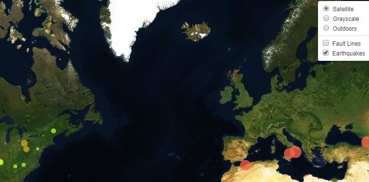

NEWS about Earthquakes
Earthquakes
Earthquakes with Layers
Earthquakes arround the WORLD
Click on the maps to monitor the last 7 days of Earthquakes.
Map shows the All Earthquakes from the Past 7 Days

Map illustrates the relationship between tectonic plates and seismic activity
